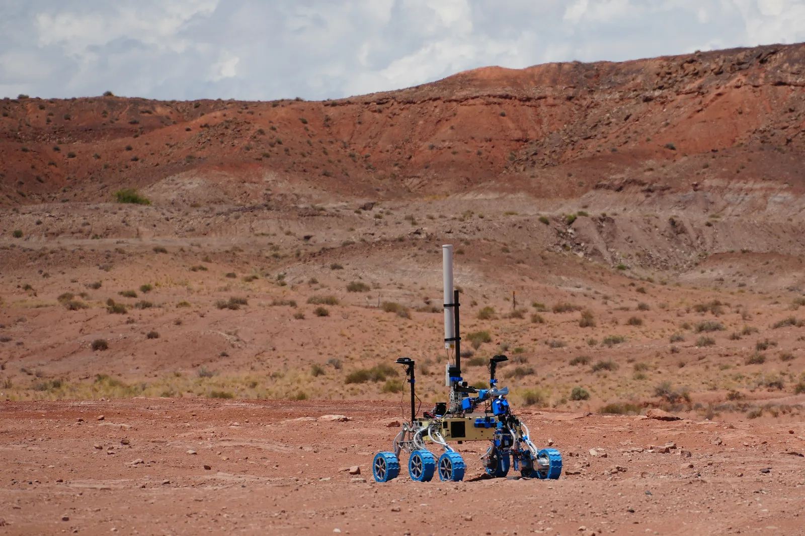

MRover Sensor Driver Code
- Engineered asynchronous, interrupt-driven C++ sensor drivers using STM32 HAL library routines over I2C memory operations.
- Implemented non-blocking sensor readout algorithms and automated error recovery protocols to handle hardware communication drops smoothly.
- Processed raw high/low register data into scaled physical units (PPM) for mission-critical rover telemetry.
Skills: C++, C